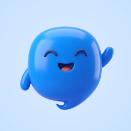
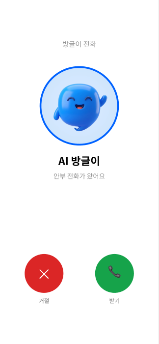

라이트 전화 방식
19,900원
월 · 부가세 포함
통화 안내이틀에 한 번 안부 · 하루 3분 통화
- 보호자 앱에서 통화 내용 확인
- 평소와 다른 이야기 알림
- 가족 3명까지 함께 보기
AI 방글이가 매일 부모님께 안부전화를 걸고, 통화가 끝나면 결과를 자녀에게 알려드립니다.


전화를 걸기 전에 기상청 특보를 먼저 확인합니다. 전화가 한 통 더 오는 게 아니라, 늘 받으시던 그 통화가 오늘 날씨에 맞춰집니다.
어르신이 편하게 알아들으실 수 있는 속도와 말투로 이야기합니다.

평소 하던 말투로 한마디만 녹음하세요. 방글이가 자연스러운 존댓말로 바꿔 여쭤봅니다.
“엄마, 오늘 무릎은 어때?”
내가 녹음한 한마디“따님이 무릎은 어떠신지
여쭤봐 달라고 하셨어요”
전화 방식은 쓰시던 휴대폰·집전화로, 앱 설치 방식은 스마트폰에 방글이 앱을 설치해 이용합니다.
몰래 듣지 않습니다. 부모님이 아시는 정해진 시간의 안부전화이고, 가족에게는 통화 요약이 전달됩니다. 대화 전문은 부모님이 연결할 때 동의하신 경우에만 열어볼 수 있습니다.
앱 설치 버전의 안부 대화와 보호자 요약을 함께 살펴보세요.
방글이와 어머니 · 안부 대화 예시
부모님께 안부전화를 걸어요.
방글이는 어떤 이야기를 나눌까요?
바쁜 날에도 중요한 이야기를 놓치지 않도록
대화 속 안부를 차근차근 정리합니다.
방글이가 가족과 함께 챙기고 있어요.
왼쪽의 대화를 재생하면 요약이 함께 채워집니다.
통화가 끝나면 한 줄 요약과 함께 대화가 기록으로 남습니다. 바쁜 날엔 요약만 보고 넘어가도 되고, 궁금한 날엔 어떤 이야기를 나눴는지 직접 읽어볼 수 있습니다.
대화 전문은 부모님이 연결할 때 동의하신 경우에만 열립니다. 동의하지 않으시면 가족에게는 한 줄 요약만 전달됩니다.
대화 내용
그 사이, 부모님의 하루는
아무도 모른 채 지나갑니다.
스마트폰이 없어도 괜찮아요. 쓰시던 휴대폰·집전화로 그대로 받으실 수 있어요.
표시한 금액은 모두 부가세 포함입니다.월 · 부가세 포함
월 · 부가세 포함
월 · 부가세 포함
통화는 정해진 시간 안에서 말씀을 끊지 않고 마무리합니다.
30일 무료 체험으로 시작하고, 필요에 따라 바꾸세요.
표시한 금액은 모두 부가세 포함입니다.30일
월 · 부가세 포함
월 · 부가세 포함
월 · 부가세 포함
체험 기간에는 모든 기능을 그대로 이용하실 수 있어요.
체험이 끝나면 요금제를 선택해야 안부 전화가 이어집니다.
| 요금제 | 전화 방식 라이트 | 전화 방식 스탠다드 | 전화 방식 플러스 | 앱 설치 무료 체험 | 앱 설치 라이트 | 앱 설치 스탠다드 | 앱 설치 플러스 |
|---|---|---|---|---|---|---|---|
| 요금 | 월 19,900원 | 월 24,900원 | 월 29,900원 | 30일 무료 | 월 5,900원 | 월 8,900원 | 월 14,900원 |
| 통화 안내 | 이틀에 한 번 안부 · 하루 3분 통화 | 주 5회 안부 · 하루 3분 통화 | 매일 안부 · 하루 3분 통화 | 매일 안부 · 하루 5분 통화 | 이틀에 한 번 안부 · 하루 3분 통화 | 매일 안부 · 하루 3분 통화 | 매일 안부 · 하루 5분 통화 |
| 보호자 앱에서 통화 내용 확인 | 포함 | 포함 | 포함 | 포함 | 포함 | 포함 | 포함 |
| 평소와 다른 이야기 알림 | 포함 | 포함 | 포함 | 포함 | 포함 | 포함 | 포함 |
| 가족 3명까지 함께 보기 | 포함 | 포함 | 포함 | 포함 | 포함 | 포함 | 포함 |
전화 방식은 부모님이 앱을 설치하지 않고 휴대폰이나 집전화로 받는 방식입니다. 앱 설치 방식은 부모님 스마트폰에 방글이 앱을 설치해 이용합니다. 두 방식 모두 보호자 앱에서 통화 내용을 확인할 수 있습니다.
앱 설치 버전에서 30일 동안 매일 안부 전화와 하루 5분 통화를 체험할 수 있습니다. 체험이 끝나면 요금제를 선택해야 안부 전화가 이어집니다.
일반 전화망으로 직접 전화를 드리는 방식이라 실제 전화 통화료가 요금에 포함되어 있습니다. 부모님은 앱을 설치하실 필요가 없습니다.
전화 방식의 모든 요금제는 하루 3분 통화입니다. 앱 설치 방식은 라이트·스탠다드가 하루 3분, 플러스·무료 체험이 하루 5분입니다. 통화는 정해진 시간 안에서 말씀을 끊지 않고 마무리합니다.
앱 설치 버전은 부모님 한 분을 추가할 때 라이트 월 4,900원, 스탠다드 월 7,900원, 플러스 월 13,900원입니다. 모든 표시 금액은 부가세 포함입니다.
가족 3명까지 함께 볼 수 있습니다. 보호자 앱에서 통화 내용을 확인하고 평소와 다른 이야기 알림을 받아보세요.
부모님께 편한 방식으로, 매일의 안부를 시작하세요.
우리 가족 요금제 고르기 앱 설치 버전은 30일 무료 체험으로 시작할 수 있어요.